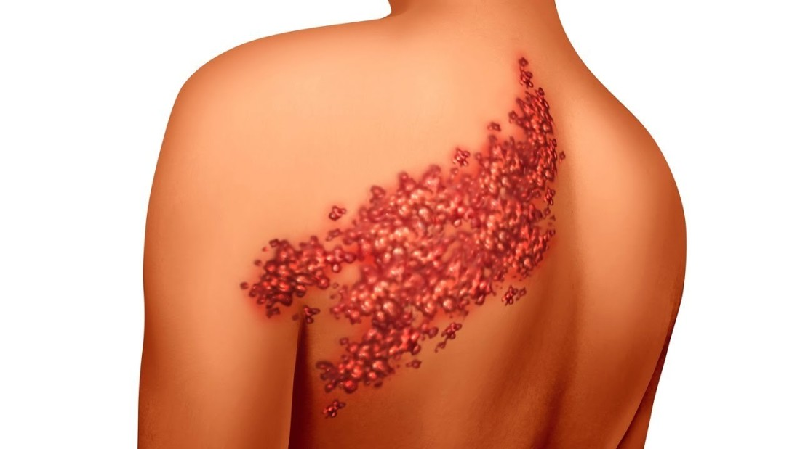

어려서 수두를 앓았거나, 수두예방접종을 받았던 사람들은 신경뿌리에 수두 대상포진 바이러스가 잠복하고 있습니다. 그러다 면역력이 떨어지게 되면 바이러스가 다시 활동을 시작하면서 발병하는 질환이 바로 대상포진입니다.
 치료의 목표는 감염의 확산, 기간을 줄이고 신경학적 합병증과 대상포진 후 신경통을 예방하는 데 있습니다. 피부 병변이 심하게 나타나는 경우 여기에 초점을 두고 신경통에 대해서는 간과하는 경우가 있는데, 이는 불행한 예후를 초래할 수 있음을 명심해야 합니다.
되도록 빨리 항바이러스제를 투여하는 것이 좋은데 72시간 이내가 가장 효과적이지만 이후에라도 투여하는 것이 보다 나은 결과를 가져옵니다. 대상포진에 의한 통증을 항바이러스제만으로 완벽하게 해결할 수는 없으므로 경구 진통제와 적극적인 신경주사를 통하여 급성통증과 대상포진 후 신경통을 예방해야 합니다.
본원에서는 통증 경감과 합병증 예방 및 관리를 위해 치료 시기에 맞춰 체계적으로 약물치료와 적절한 신경통 주사 및 신경통 수액치료 등을 통해 적극적으로 회복을 도와드립니다.
대상포진은 물집이 발생하기 며칠 전부터 심한 통증이 생기기 때문에 다른 질환으로 착각하기 쉽습니다. 몸의 한쪽에만 발생하며 피부가 붉게 되면서 주위에 작은 물집이 띠 모양으로 발생하여 1-2주 지속됩니다. 옷깃이 스치기만 해도 통증을 느낄 수도 있고, 벌레가 기어가는 듯한 느낌이 드는 경우도 있습니다.
감기 몸살이나 신경통과 비슷함
전신권태감, 발열, 오한 두통
속이 메스껍고 배가 아프고 설사하기도 함
심한 가려움증, 따끔거림, 화끈거림
칼로 찌르는 듯한 심한 통증
온몸이 쑤시고 아프며, 압통과 이상감각 동반
대상포진은 바이러스가 침투하는 인체부위에 따라 합병증이 다양하게 나타납니다.
얼굴 주위에 생기면 얼굴 한쪽이 마비되기도 하며, 눈 주위에 생기면 눈을 침범하여 시력을 떨어뜨릴 수 있습니다.
또한 골반 주위에 생기면 방광 부위의 신경을 파괴하여 소변보기가 힘들수도 있습니다.
드물긴 하지만 심할 경우에는 바이러스가 뇌를 침범해 뇌염을 일으키면서 신경학적인 장애까지 남길수도 있습니다.